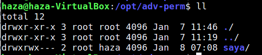

Pengertian Sticky Bit :
Sticky Bit adalah special permission yang mana hanya pada akun pemilik (user as owner) dan akun root yang bisa menghapus atau me-rename suatu direktori atau berkas. Artinya jika Anda login sebagai Fulan lalu men-sticky bit suatu berkas Anda, lalu ada orang lain ingin me-rename atau menghapusnya ia tidak akan bisa, meskipun kita mengeset permission-nya dengan 777 yang mana seharusnya semua user bisa saja menghapus atau rename direktori. Karena si Fulan men-sticky bit maka user lain yang satu group sekalipun tidak akan bisa. Perlu diketahui untuk menggunakan sticky bit, kita harus mengeset pada top directory / parent directory-nya.
Beberapa Configure Sticky Bit :
Membuat Folder :
Sebelum itu kita harus membuat folder terlebih dahulu,saya disini membuatnya di /opt/adv-perm :
$ sudo mkdir saya
Merubahnya menjadi Sticky Bit :
$ sudo chmod 1777 saya(nama folder)
atau
$ sudo chmod +t saya(nama folder)
Sebelum Sticky Bit
Sesudah Sticky Bit
Perbedaannya sangat jelas sebelum kita menambahkan Sticky Bit maka pada permission tidak ada huruf T dan setelah kita menambahkan Sticky Bit maka kebalikannya.
Mengubah permission groups :
$ sudo chown root:haza saya(nama folder)
Dan jika kita akan membuat file di dalam folder saya maka permission groupsnya akan sama seperti permission groups folder.
Nah jika kalian sudah menambahkan Sticky Bit pada folser kalian maka jika folder itu dihapus oleh user lain tidak akan bisa atau permission denied.
Semoga berhasil mencoba kawan.jika terjadi error atau hal lain maka bisa chat dengan admin lewat medsos dibawah.